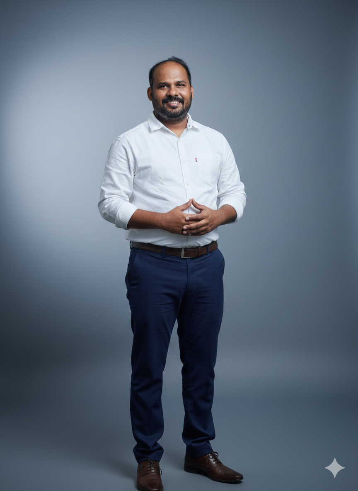

I build reliable, high-performance backend systems for enterprise clients. Currently leading Java development at Renault Nissan's global tech centre — working across Spring Boot microservices, GKE deployments, CI/CD pipelines, and full-stack Angular delivery. I've also worked at Infosys and CAMS, picking up experience in large-scale enterprise delivery and financial services systems. Looking to bring this depth to a strong team in Europe, Singapore, or Malaysia.

Led the end-to-end design and delivery of OneVAL, an enterprise platform managing the complete lifecycle of vehicle validation for Renault Nissan's global engineering teams. The system orchestrates complex validation workflows — from test planning and execution to sign-off — across multiple vehicle programmes simultaneously. Served as Technical Lead and Associate Architect, responsible for microservices architecture, cloud infrastructure on GCP, async messaging via ActiveMQ, and Angular-based UI delivery. Redis was used for distributed caching to handle high-concurrency validation state, with MongoDB and PostgreSQL serving structured and unstructured data needs respectively.
Served as Global Delivery Lead across three interconnected platforms — PUCE, VESPA, and MAC Relay — designed to manage the full lifecycle of vehicle diagnostics for Renault Nissan's engineering and aftersales divisions. These systems handle diagnostic test case management, results processing, and relay configuration for vehicles across global markets. Led cross-functional delivery teams spanning multiple geographies, coordinating architecture decisions, release planning, and stakeholder alignment across the programme. The full-stack delivery covered Spring Boot backend services, Angular UI modules, and PostgreSQL data management.
Contributed as Technology Analyst on a GST compliance platform built to automate the generation, validation, and delivery of tax components in line with India's GST regulatory framework. The system ensured accurate tax computation and reporting across transactions, reducing manual intervention and compliance risk. Worked on backend service development using Spring Boot and Angular-based UI components, with MySQL as the underlying data store. Collaborated closely with business and compliance teams to translate regulatory requirements into reliable software solutions.
Delivered a banking automation solution leveraging Newgen BPM to digitise physical document-based banking processes into structured, workflow-driven digital operations. The project involved analysing legacy manual workflows, modelling them as automated business processes, and integrating the BPM platform with core banking data systems. Key outcomes included significantly reduced processing time, improved audit traceability, and elimination of manual data entry errors — enabling the bank to scale operations without proportional headcount growth.
A practical walkthrough of how to identify and fix memory leaks before they take down your service — tools, patterns, and lessons from real incidents.
Circuit Breaker, Saga, API Gateway — what they look like in practice versus what the textbooks say. Based on patterns we've used in our Renault Nissan stack.
How we use GKE, Cloud SQL, Pub/Sub, and GitHub Actions together — plus the things I wish I'd known earlier when we first moved to GCP.